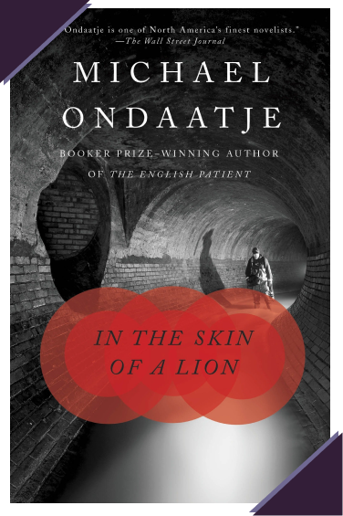
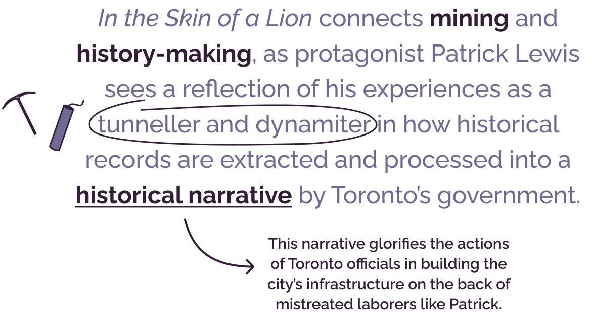
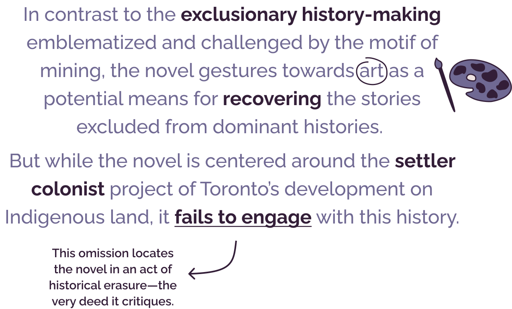

Title
My Thesis, By the Numers
Abstract
Chapter Arguments
Chapter 1
Mining and Colonial Historigraphy in
In the Skin of a Lion

Context
published in 1987
set in early-1900s Toronto, Canada
follows the lives of laborers (many of them immigrants) building the city of Toronto
Chapter 1 Argument

